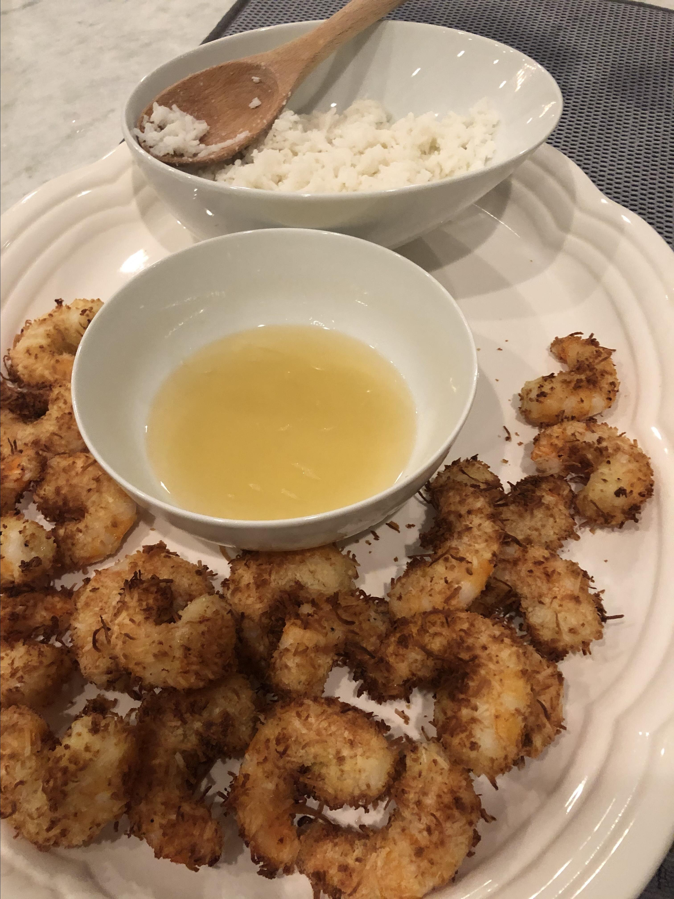

Return to homepage
Air Fryer Coconut Shrimp

Description
Coconut shrimp come out great in the air fryer, and are served with a simple spicy honey-lime dip.
- ½ cup all-purpose flour
- 1 ½ teaspoons ground black pepper
- 2 large eggs
- ⅔ cup unsweetened flaked coconut
- ⅓ cup panko bread crumbs
- 12 ounces uncooked medium shrimp, peeled and deveined
- cooking spray
- ½ teaspoon kosher salt, divided
- ¼ cup honey
- ¼ cup lime juice
- 1 serrano chile, thinly sliced
- 2 teaspoons chopped fresh cilantro
Go up